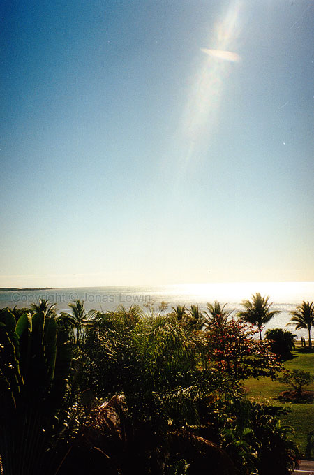

|
Australia,
Cairns, 1999-09 The place to go diving, according to everyone else. They
do have great instructors though, and when I was there the weather was
pretty rough, so you learn to dive in quite difficult conditions. This gets
your diving self esteem to a new level. So, then you know that you will have
no trouble diving in places like Thailand (Phuket). In Thailand it's just a
walk in the park, compared to diving at the Great Barrier Reef. And over
there is more to see under the surface.
View
from my hotel.

I
went on a safari, to see some crocodiles and taking a boat trip in the
mangrove. If you're interested, then I would recommend it, but don't expect
to see any animals, other than the crocodiles.
There is a Crocodile on the image. Just above "Lew" in the center of the
image. Just under the green bushes. Hard to see?
You'll
see a lot of trees, and rain forrest, but not much more. Nice trip though.
I
don't have any picture of that exact one, but I did actually pet a napoleon
fish (seen on the picture). They are very slippery, and now I understand why
sharks sometimes loses it's pray. This 1 meter fellow was very friendly, and
very curious. Touching a fish in the ocean was very exciting. I am the
visitor there, and the fish allowed me to explore it's hospitality. I am
very thankful for that. I hope that we can keep the oceans at the state they
are today, and not worsen the situation.
The people on the picture are the certified rescue-divers and our
instructor. Luciano was my diving buddy there, and we got a long very well
together. He gave me the confidence I needed to believe in myself. Most of
the time on the boat we where all chatting about life and diving. We where
doing some "pleasure dives" as well. The morning dive was really great. The
sun just came up when we jumped in the water. I also did my first night dive
there. This was not my thing. I like to see more nature then what you can
see with the light of my flashlight. During the night dive, the napoleon
fish followed us. When our light hit another smaller fish, that fish got
temporarily blinded by our light. So then the napoleon tried to catch the
blinded confused fish. Sometimes it got lucky.
When we where doing a navigation dive, for the search and rescue, we came
across a shark that was staying at the bottom. Very very nice thing to see.
It moves without any effort. Needless to say, my heart was working quite
hard the first seconds when I realized that I was in the water with a shark.
But when I saw that the shark where just watching me with no real interest,
I cooled down quite quick, to really enjoy my presence near a live shark.
After a moment the shark lost its interest in us, and took off. Also the
turtles are gracious animals under water. Well, at least compared their
maneuver capability on land that is.
So I think I got so see my share of nice creatures. The boat ride back to
shore was by a much smaller boat. Since we had very rough weather a lot of
people got seasick. Luckily I was not one of them. The reason could be that
I spend some time each year working at an amusement park, on one of the
rides.
If you're not going diving, there is Bungee jumping and White water rafting
to keep you busy. Rafting is very thrilling for me, and I would like to do
it again some time, if the conditions are right. Bungee jumping was not
exciting for me. A complete waste of time. No fear, no rush, no excitement.
Other than that - there is nothing more to do in Cairns. Unless you want to
go on some tours for several days, but to me, this is not in Cairns. |